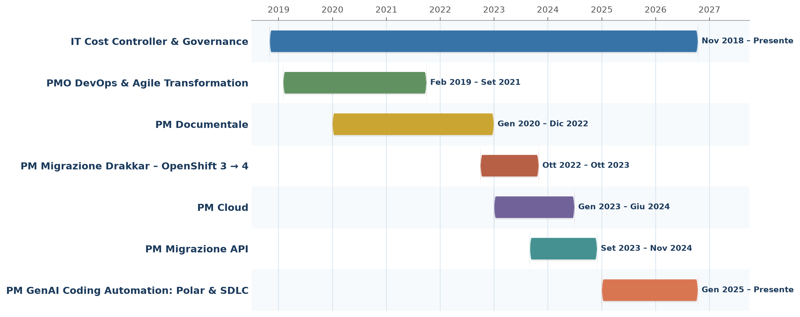

Profilo Professionale
IT Project Manager e Account Manager con oltre 9 anni di esperienza nella consulenza IT, specializzato nella governance di programmi complessi di trasformazione digitale, con particolare focus sul settore assicurativo, sulla Generative AI e sull’evoluzione delle architetture e dei modelli operativi IT. Esperto nell’adozione di soluzioni di AI Agentica a supporto del Software Development Life Cycle (SDLC), con l’obiettivo di incrementare produttività, qualità del software ed efficienza operativa. Solida esperienza nella gestione di programmi e progetti IT, nel coordinamento di team multidisciplinari e nelle iniziative di Cloud Transformation, DevOps ed Enterprise Architecture, con competenze in governance, gestione dei rischi e ottimizzazione dei processi IT. Attualmente ricopro il ruolo di Account Manager presso HSPI S.p.A. (TXT Group), coordinando un team di 9 professionisti e guidando iniziative di innovazione e modernizzazione tecnologica a supporto della funzione Architetture IT di un primario gruppo assicurativo italiano.
Esperienza Professionale
- Program management dell’iniziativa di Generative AI e introduzione di Polar per una primaria compagnia assicurativa italiana, con l’obiettivo di accelerare lo sviluppo software e incrementare produttività e qualità del codice lungo l’intero SDLC, attraverso l’integrazione di soluzioni AI quali Google Gemini e Claude Sonnet.
- Coordinamento cross-funzionale dei team Development, Testing, DevOps e Business, garantendo l’allineamento tra obiettivi strategici, implementazioni tecnologiche e priorità aziendali.
- Pianificazione e governance della roadmap, attraverso la gestione delle iniziative su Jira e la definizione di piani strategici di alto livello a supporto delle decisioni manageriali.
- Stakeholder management e reporting direzionale, con predisposizione di presentazioni executive per monitorare lo stato di avanzamento, condividere i risultati e supportare il processo decisionale.
- Monitoraggio dei KPI di performance e produttività, mediante lo sviluppo di report automatizzati per misurare l’efficacia delle soluzioni implementate e identificare opportunità di ottimizzazione del ciclo di sviluppo.
- Project management e governance della migrazione di oltre 800 API e 5.000 sottoscrizioni da IBM API Connect v5 a v10, con il coinvolgimento di oltre 400 stakeholder e 50 team applicativi.
- Definizione della strategia e della pianificazione progettuale, includendo gestione dei rischi, test di non regressione, piano di comunicazione ed escalation, garantendo l’allineamento con le priorità e le iniziative di business.
- Monitoraggio dell’avanzamento e reporting direzionale, attraverso lo sviluppo di dashboard Power BI e la predisposizione di report per il Comitato di Direzione, a supporto del controllo delle milestone, delle criticità e dei rischi.
- Coordinamento degli stakeholder tecnici e dei team applicativi, facilitando la transizione alla nuova piattaforma e assicurando il presidio delle dipendenze, delle tempistiche e delle criticità progettuali.
- Governance della documentazione di progetto, garantendo tracciabilità delle decisioni, condivisione delle informazioni e allineamento tra gli stakeholder coinvolti.
- Governance del programma di trasformazione Multi-Cloud (AWS, Azure e GCP), con definizione degli standard architetturali e operativi (Cloud Foundation) per il provisioning centralizzato di servizi e risorse cloud, inclusi container, soluzioni serverless, database, account, VPC e policy di sicurezza.
- Definizione e implementazione della strategia FinOps, attraverso l’introduzione di standard di tagging, dashboard direzionali su Tableau e sistemi di alerting, finalizzati al monitoraggio e all’ottimizzazione dei costi cloud.
- Disegno e integrazione dei processi IT Service Management (Event, Incident e Release Management), assicurando l’allineamento con i processi on-premises e la continuità del modello operativo aziendale.
- Preparazione di analisi e materiali strategici per il Comitato IT, a supporto del CIO nei processi decisionali relativi all’evoluzione della strategia cloud aziendale.
- Project management della migrazione di oltre 400 applicazioni e 2.000 componenti da Red Hat OpenShift 3 a OpenShift 4, con definizione del piano di progetto, strategia di migrazione, gestione dei rischi, test di non regressione, comunicazione e verifica della compatibilità dei componenti.
- Coordinamento tecnico e stakeholder management, attraverso il monitoraggio dell’avanzamento, la creazione di dashboard di controllo in Excel e la gestione della comunicazione progettuale.
- Gestione della documentazione e del supporto operativo, mediante la redazione di verbali tecnici, linee guida e FAQ su GitLab, e il supporto ai team di sviluppo nella risoluzione delle criticità durante la migrazione.
- Coordinamento di team multidisciplinari per la progettazione, lo sviluppo e l’evoluzione di una toolchain DevOps a supporto di oltre 1.500 sviluppatori, tra dipendenti e consulenti, integrando soluzioni per source code management (GitLab), CI/CD (Jenkins), containerizzazione (Docker), test automation (Selenium), application monitoring (Dynatrace) e log management (Splunk).
- Definizione e implementazione di processi self-service automatizzati, in linea con il framework ITIL, per standardizzare l’erogazione dei servizi della piattaforma, incrementare l’efficienza operativa e promuovere un modello di gestione orientato ai servizi self-service.
- Definizione e diffusione della documentazione operativa e funzionale, attraverso la redazione di linee guida e FAQ, per favorire l’adozione della piattaforma e garantire uniformità nelle modalità di utilizzo.
- Introduzione e adozione di Jira per la digitalizzazione dei processi Agile, con l’obiettivo di ottimizzare i workflow, migliorare la collaborazione tra i team di sviluppo e aumentare la trasparenza nella gestione delle attività.
- Progettazione e implementazione dei processi di Demand Management su piattaforma ServiceNow, standardizzando il flusso di raccolta, valutazione e prioritizzazione delle richieste IT
- Definizione dei workflow approvativi e integrazione con i processi ITSM esistenti, riducendo i tempi di risposta alle richieste di business
- Pianificazione e coordinamento del programma di digitalizzazione documentale su piattaforma Enterprise Content Management (FileNet) per l’intero gruppo assicurativo
- Gestione degli stakeholder e dei team coinvolti, definizione di piani di rilascio e milestone di progetto
- Gestione dei rischi di progetto e delle attività di test e non-regressione in fase di migrazione documentale
- Monitoraggio avanzamento, reportistica periodica e governance delle attività di implementazione
- Budget Management: pianificazione e gestione del budget annuale, con monitoraggio degli scostamenti, controllo dei costi e predisposizione di reporting a supporto delle decisioni manageriali.
- Contract & Vendor Management: supporto alla negoziazione, stipula e rinnovo dei contratti tra committente e fornitori, in collaborazione con le funzioni IT (Architetture, IT Cost Control e IT Governance), Amministrazione e Buyer.
- Resource & Capacity Management: pianificazione e gestione della capacity delle risorse interne ed esterne, assicurando l’allineamento tra disponibilità, fabbisogni progettuali e priorità operative.
Gantt delle Iniziative
